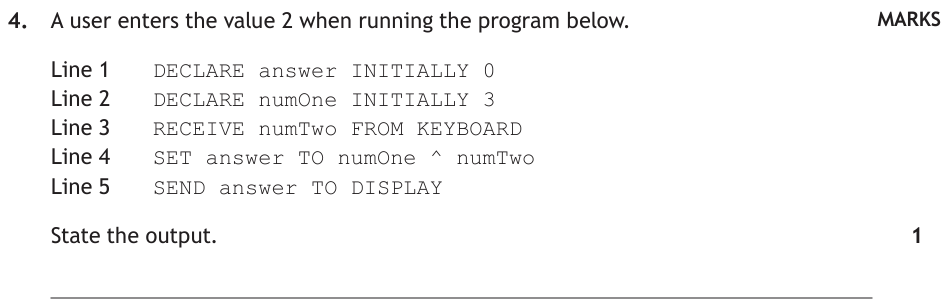
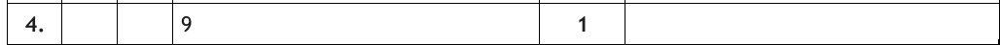
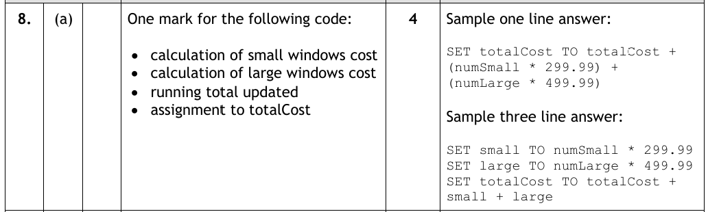
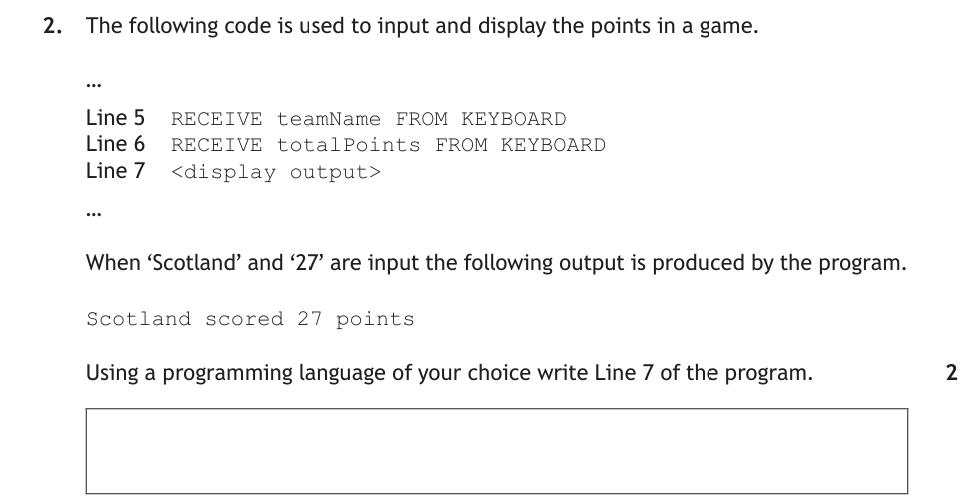
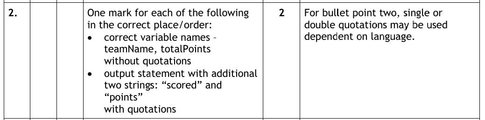

Introduction
You can now get data into a program and results out — this page fills in the middle: the processes. At National 5, that mostly means calculations built from five arithmetic operators, with the results stored in variables. And because not everything we join together is a number, we'll also cover concatenation — sticking strings together.
Key Terms
+ for addition or * for multiplication.num1 + num2. Expressions are used to assign values to variables.5 ** 2 is 5², which is 25.+ (or & in reference language).The Arithmetic Operators
Five operators, and you know most of them from maths already — just watch the symbols, because two of them aren't what you'd write on paper:
| Operation | Python | Example | Result (num1=5, num2=2) |
|---|---|---|---|
| Addition | + | num1 + num2 | 7 |
| Subtraction | - | num1 - num2 | 3 |
| Multiplication | * | num1 * num2 | 10 |
| Division | / | num1 / num2 | 2.5 |
| Exponentiation (to the power of) | ** | num1 ** num2 | 25 |
So multiplication is * (not ×), division is / (not ÷), and "to the power of" is **:
square = num1 ** 2 # num1 squared cube = num1 ** 3 # num1 cubed
^, e.g. SET square TO num1 ^ 2.Here's exactly that ^ operator in a real past paper question — trace it through and jot down your answer before opening the walkthrough.

How to tackle it: We trace the program one line at a time, keeping track of what each variable holds — exactly like the variable boxes from the last two pages.
- Lines 1 and 2 —
answerstarts at 0,numOnestarts at 3. - Line 3 — the user enters 2, so
numTwois 2. - Line 4 —
^is exponentiation:numOne ^ numTwois 3², which is 9. The 0 inansweris overwritten. - Line 5 — the current contents of
answerare displayed.
Watch the traps: ^ means "to the power of", not multiply — 3 × 2 = 6 is wrong. And the order matters: it's numOne ^ numTwo (3² = 9), not numTwo ^ numOne (2³ = 8).

The answer is:
9
Using Calculations in Programs
A calculation on its own doesn't achieve much — the result needs to go somewhere. We assign the result of the expression to a variable. The pattern is always: expression on the right, variable on the left.
# Two numbers to work with num1 = 5 num2 = 7 # The expression (right) is worked out, then stored (left) total = num1 + num2 difference = num1 - num2 product = num1 * num2
And of course, the values usually come from the user. Here's input, process and output working together — the full pattern from analysis, now in real code:
# Ask the user for their three exam marks
physics = int(input("Enter your Physics mark: "))
computing = int(input("Enter your Computing mark: "))
maths = int(input("Enter your Maths mark: "))
# Add the scores together
total = physics + computing + maths
# Display the total
print("Your total mark is " + str(total))
That's the same program we analysed and designed earlier in the topic — three inputs, one process, one output. Everything connects!
Expression Stepper
Watch the pattern happen: three expressions of increasing difficulty, stepped through one stage at a time — variable names swapped for their values, brackets worked out, then the finished result dropping into the variable box on the left.
Now a bigger past paper question — this is what the intro warned about: a calculation hiding inside a loop question. Try writing the line yourself first.
![Past paper question: a window replacement company employs a programmer to write a program that calculates how much it will cost to fit triple glazed windows. Small windows cost £299.99 and large windows cost £499.99 to replace. The algorithm sets totalCost to 0, asks for the number of rooms, then loops through the rooms asking for the number of small and large windows and calculating and updating totalCost, before displaying totalCost. Part a: step 6 in the algorithm calculates and updates the total cost. Using a programming language of your choice, write the code for step 6. 4 marks.](../resources/sdd/worked_examples/n5_calc_q2.png)
How to tackle it: Four marks means the markers are looking for four separate ingredients in one line (or a few lines) of code. We build it up piece by piece:
- Cost of the small windows —
numSmall * 299.99. - Cost of the large windows —
numLarge * 499.99. - Update the running total — step 6 sits inside the loop, so each room's windows must be added on to what's there already:
totalCost + …. - Assign the result — store it back in
totalCost.
The killer detail is totalCost appearing on both sides. The right-hand side is worked out first using the old total, then the answer overwrites it — that's what "update" means. Writing totalCost = numSmall * 299.99 + numLarge * 499.99 would overwrite the total with just this room's cost and lose a mark.

An example would be (in Python):
totalCost = totalCost + (numSmall * 299.99) + (numLarge * 499.99)
Calculations — Video Explanation
String Concatenation
Concatenation means joining strings together, and it uses the + operator. So + does two completely different jobs: with numbers it adds, with strings it joins.
word1 = "Hello"
word2 = "World"
sentence = word1 + word2
print(sentence) # HelloWorld
print("My name is " + name) # joining a message to a variable
Spotted the problem above? "Hello" + "World" gives HelloWorld — concatenation joins exactly what you give it, spaces included (or in this case, not included). Put the space inside one of the strings: "Hello " + "World".
fName = "Mr" lName = "Currie" name = fName + lName print(name) # prints "MrCurrie" — where should the space go?
str() — e.g. print("Total: " + str(total)). Try it without the str() and Python will complain loudly.In reference language, concatenation uses the & symbol: SEND "Total is " & total TO DISPLAY.
Build the Output
Three rounds — each shows a target output and a tray of pieces: variables, quoted strings (with every space visible as ␣), +, , and str(). Assemble the print line that produces the target exactly. Wrong quotes, missing spaces and un-converted numbers all fail exactly the way real Python does.
Here's how concatenation actually gets examined — building one output line from variables and text. Write your own Line 7 before opening the walkthrough.

How to tackle it: We compare the output with the variables. Scotland and 27 came from the variables; scored and points didn't — they're literal text the program must supply. So Line 7 alternates: variable, string, variable, string.
- Variables without quotes —
teamNameandtotalPointsmust use their exact names, no quotation marks, or you'd print the words instead of the contents. - Strings with quotes —
" scored "and" points"are literal text, so they need quotation marks. - Spaces — concatenation joins exactly what you give it, so the spaces must live inside the quoted strings.
One Python-specific catch: if totalPoints was cast to a number on input, it needs str() before it can be joined with + — or sidestep the whole issue with commas.

An example would be (in Python):
print(teamName + " scored " + str(totalPoints) + " points")
or, using commas: print(teamName, "scored", totalPoints, "points")
Practice Questions
Each of these tests the same skill as one of the worked examples above. Write your answer down before opening the marking instructions.
A user enters the value 2 when running the program below.
Line 1 DECLARE result INITIALLY 0 Line 2 DECLARE numOne INITIALLY 9 Line 3 RECEIVE numTwo FROM KEYBOARD Line 4 SET result TO numOne / numTwo Line 5 SEND result TO DISPLAY
State the output.
Marking Instructions
4.5 (1 mark)
numOne / numTwo is 9 ÷ 2 = 4.5 — division always gives a real number. Do not accept 4 or "4 remainder 1".
A flooring company employs a programmer to write a program that calculates the cost of fitting laminate flooring in a square room. Laminate costs £11.50 per square metre, and there is a fixed fitting fee of £30.
The algorithm to calculate the cost is shown below.
- Ask for the length of the room in metres
- Calculate the floor area
- Calculate the total cost
- Display the total cost
Steps 2 and 3 in the algorithm calculate the floor area and the total cost. Using a programming language of your choice, write the code for steps 2 and 3.
Marking Instructions
One mark for each of the following:
- floor area calculated using exponentiation (length ** 2)
- cost of the laminate (area × 11.50)
- fitting fee of £30 added
- assignment to appropriately named variables
Sample answer (Python):
area = length ** 2
totalCost = area * 11.50 + 30
Accept length * length for the area, and a one-line answer such as totalCost = (length ** 2) * 11.50 + 30.
The following code is used to input and display rainfall readings.
Line 3 RECEIVE townName FROM KEYBOARD Line 4 RECEIVE rainfall FROM KEYBOARD Line 5 <display output>
When 'Oban' and '12' are input the following output is produced by the program.
Oban had 12 mm of rain
Using a programming language of your choice, write Line 5 of the program.
Marking Instructions
One mark for each of the following in the correct place/order:
- correct variable names — townName, rainfall — without quotations
- output statement with the two additional strings "had" and "mm of rain" — with quotations
Sample answer (Python):
print(townName + " had " + str(rainfall) + " mm of rain")
or, using commas: print(townName, "had", rainfall, "mm of rain")
The following program runs without errors.
fName = "Ben" lName = "Nevis" fullName = fName + lName print(fullName)
State the exact output of the program.
Marking Instructions
BenNevis (1 mark)
Concatenation joins exactly what it is given — no space was included in either string, so no space appears in the output. "Ben Nevis" with a space is not the output this program produces.